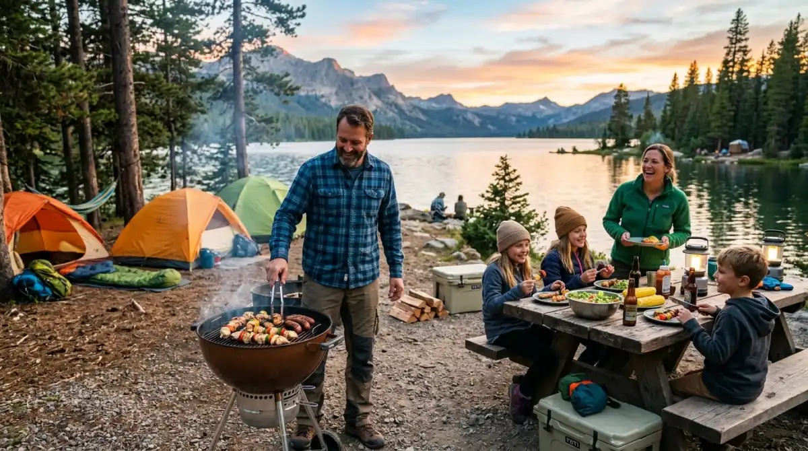
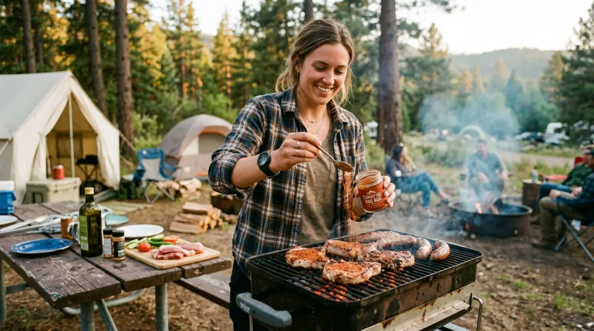

Panduan praktis agar acara barbeque saat camping berjalan sukses tanpa kendala.Bayangkan skenario ini: Kamu baru saja melewati minggu yang brutal di kantor. Target KPI mencekik, deadline menumpuk, dan kamu akhirnya berhasil melarikan diri ke pegunungan untuk healing di akhir pekan. Ekspektasinya sempurna: duduk santai di depan tenda, menyesap minuman hangat, sambil menikmati aroma daging panggang yang juicy bersama sahabat. Namun, realitanya sering kali kejam.
Arang tak kunjung menyala karena udara terlalu dingin, daging yang dibawa masih beku atau malah sudah tak segar, dan akhirnya kalian cuma makan mi instan dalam diam. Jangan sampai momen pelarian berhargamu ini berantakan dan menyisakan penyesalan mendalam hanya karena persiapan teknis yang disepelekan. Kegagalan kecil di alam bebas bisa merusak mood liburan yang sudah susah payah kamu rencanakan.
Itulah mengapa memahami Tips Barbeque Saat Camping sangatlah krusial, terutama buat kamu yang baru pertama kali merencanakannya. Memasak di alam terbuka memiliki tantangan cuaca dan logistik yang jauh berbeda dari sekadar menyalakan kompor di dapur rumah.
Kamu butuh taktik layaknya merencanakan proyek kerja agar acara bakar-bakar ini sukses besar. Lewat panduan lengkap ini, aku akan membongkar rahasia praktis agar agenda BBQ-mu berjalan mulus, sehingga kamu pulang dengan pikiran yang benar-benar fresh, bukan rasa sesal.
Mengapa Persiapan Barbeque di Alam Bebas Itu Sangat Berbeda?
Kalau kamu makan di restoran all-you-can-eat atau grill di halaman rumah, semuanya serba terkendali. Kamu tinggal memutar knop kompor atau meminta staf restoran mengganti arang. Namun, di alam bebas, variabelnya sama sekali tidak bisa diprediksi.
Suhu yang tiba-tiba merosot tajam saat malam turun, angin gunung yang berembus kencang, embun yang membuat segala hal menjadi lembap, hingga keterbatasan alat dan air bersih adalah tantangan nyata yang harus kamu hadapi.
Mengatur acara BBQ di area camping itu mirip dengan memimpin meeting lintas divisi: kalau persiapannya asal-asalan dan tidak ada mitigasi risiko, eksekusinya pasti berantakan. Kamu tidak bisa sekadar mampir ke minimarket terdekat, membeli daging mentah dan sebungkus arang murahan, lalu berharap keajaiban terjadi di atas gunung. Semuanya butuh perhitungan matang, mulai dari pemilihan bahan bakar, jenis alat, hingga timing memasak.
Panduan Lengkap dan Tips Barbeque Saat Camping
Agar malam keakrabanmu tidak berubah menjadi ajang menguji kesabaran (atau kelaparan massal), berikut adalah penjabaran langkah demi langkah yang wajib kamu aplikasikan.
1. Pilih Arang Briket yang Tahan Suhu Ekstrem
Pertanyaan yang paling sering muncul dari pemula adalah: "Kenapa arangku susah banget nyala saat di gunung?" Jawabannya ada pada jenis arang yang kamu bawa. Kesalahan paling fatal adalah membawa arang kayu biasa yang biasa dijual di pasar tradisional.
Secara teori, arang kayu biasa memiliki rongga udara yang lebih besar dan kepadatan yang rendah. Ketika dihadapkan pada suhu dingin dan kelembapan pegunungan yang tinggi, arang ini sangat sulit memicu titik api yang stabil.
Sebagai solusinya, gunakan arang briket (briquette charcoal), khususnya yang terbuat dari batok kelapa. Briket memiliki kepadatan yang sangat tinggi (presisi pabrikan) sehingga panas yang dihasilkan jauh lebih stabil, tahan lama, dan minim asap.
Memilih arang briket ini ibarat merekrut anggota tim yang kompeten; mungkin kamu harus membayar sedikit lebih mahal di awal, tapi hasil kerjanya konsisten dan tidak banyak drama saat ditekan oleh 'cuaca' yang tidak bersahabat. Jangan lupa bawa fire starter berbahan parafin atau blow torch portabel agar proses menyalakan api bisa secepat meminta approval cuti ke atasan yang lagi good mood.
2. Bawa Alat Panggang Portabel Anti-Ribet
Ruang di dalam bagasi mobil atau tas carrier kamu tentu sangat terbatas. Kamu jelas tidak mungkin menggotong panggangan besi raksasa dari garasi rumah. Oleh karena itu, salah satu tips barbeque saat camping yang paling esensial adalah berinvestasi pada alat panggang lipat portabel berbahan stainless steel.
Pilihlah model folding grill (panggangan lipat) yang bentuknya bisa dipipihkan menyerupai bentuk laptop. Kenapa harus stainless steel? Secara teori material, bahan ini tidak mudah berkarat saat terpapar embun malam dan sangat mudah dibersihkan dari lemak yang menempel, bahkan ketika kamu hanya punya persediaan air yang terbatas.
Selain itu, pastikan jaring panggangannya cukup rapat. Kamu pasti tidak ingin melihat potongan sosis atau daging slice mahalmu meluncur bebas ke dalam bara api—sebuah tragedi kecil yang sungguh menyayat hati saat cacing di perut sudah meronta-ronta.

Persiapan bumbu marinasi yang tepat menjadi kunci kelezatan daging panggang saat camping.3. Strategi Marinasi Daging dari Rumah (Teknik Ice-Pack Alami)
Membawa daging segar untuk perjalanan darat berjam-jam butuh manajemen risiko kelayakan pangan yang baik. Daging yang terpapar suhu ruang terlalu lama bisa memicu pertumbuhan bakteri, mengubah rasa, dan teksturnya menjadi alot.
Agar daging tetap segar dan bumbunya meresap sampai ke serat terdalam, lakukan proses marinasi utuh sejak di dapur rumahmu. Gunakan bumbu dasar yang secara alami memiliki sifat antimikroba dan pengawet ringan, seperti lada, bawang putih, garam laut, dan kecap.
Setelah dimarinasi, masukkan daging ke dalam plastik vakum. Kalau kamu belum punya alat vakum, gunakan kantong ziplock tebal; masukkan daging, lalu rendam perlahan bagian bawah plastiknya ke dalam baskom berisi air agar tekanan air mendorong udaranya keluar, lalu tutup rapat segelnya.
Bekukan daging marinasi ini di dalam freezer selama 24 jam sebelum keberangkatan. Saat hari-H, daging yang beku padat ini akan bertindak sebagai "ice pack" alami di dalam cool box kamu. Daging ini perlahan akan mencair (thawing) secara bertahap selama perjalanan, dan akan mencapai suhu dan kelembutan yang pas tepat saat kamu tiba di area camping pada sore hari. Praktis, higienis, dan rasanya dijamin sekelas restoran steak premium!
4. Manajemen Waktu: Kapan Harus Menyalakan Api?
Ini adalah hal yang sering diremehkan. Memanggang di gunung tidak bisa disamakan dengan kompor gas yang bisa langsung dipakai detik itu juga. Kamu butuh waktu sekitar 30 hingga 45 menit hanya untuk memastikan arang menyala sempurna dan berubah menjadi bara abu-abu yang dilapisi debu putih.
Mulailah menyalakan api saat langit masih sore atau saat matahari baru mulai terbenam. Jangan menunggu sampai langit benar-benar gelap dan perut sudah sangat lapar.
Mengelola waktu BBQ ini sama persis dengan time management di kantor: kerjakan fondasinya (bara api) lebih awal agar saat fase eksekusi (memanggang), kamu tidak terburu-buru dan hasilnya matang merata, tidak gosong di luar tapi berdarah di dalam.
Wawasan Eksklusif: Belajar dari Pengalaman Tim Batu Sunrise Camp
Teori dan artikel di internet memang mudah dibaca, tapi bagaimana kenyataannya di lapangan? Untuk memberikan pandangan yang komprehensif dan bisa diandalkan (sesuai prinsip keahlian dan pengalaman nyata), kita harus belajar dari praktisi lapangan.
Mari kita ambil insight dari tim pengelola di Batu Sunrise Camp. Sebagai fasilitator kawasan perkemahan yang setiap akhir pekannya menangani ratusan pengunjung di tengah sejuknya udara dataran tinggi Batu, Malang, tim ini sering kali menjadi 'penyelamat' bagi campers pemula yang nyaris putus asa karena gagal menghidupkan perapian BBQ mereka.
"Masalah utama yang sering menggagalkan BBQ pengunjung bukanlah kualitas dagingnya, melainkan ketidaktahuan soal 'Membaca Angin'. Udara dingin di pegunungan akan dengan cepat mencuri panas dari arang jika panggangan dibiarkan terbuka dari segala sisi."
— Tim Fasilitator Batu Sunrise CampTim fasilitator selalu mengedukasi pengunjung untuk membuat penahan angin (windbreak) taktis. Caranya cukup sederhana: manfaatkan tas carrier, matras aluminium foil, atau susunan batu alam untuk memblokir arah datangnya angin utama.
Selain itu, mereka punya trik formasi arang. Jangan langsung menyebar arang di dasar panggangan. Susun arang briket membentuk piramida atau kerucut di tengah. Formasi ini membuat energi panas terpusat; panas dari arang di bagian bawah akan memanaskan arang di atasnya secara efisien.
Setelah 70% bagian arang berubah menjadi bara putih, barulah ratakan arang tersebut ke seluruh permukaan panggangan. Wawasan taktis yang lahir dari jam terbang tinggi inilah yang sering kali membedakan antara acara BBQ yang sukses besar dengan acara yang gagal total.
Jangan Lupakan Elemen Pendukung Suasana
Barbeque di alam liar bukan melulu soal memenuhi kebutuhan kalori, tapi tentang membangun koneksi dan momen yang mahal. Agar suasana makin hangat di tengah suhu yang menusuk tulang, jangan lupa membawa menu pendamping (side dish) yang menyenangkan.
Bawalah jagung manis yang sudah diolesi mentega dan dibungkus aluminium foil dari rumah, marshmallow raksasa untuk pencuci mulut, atau ubi madu Cilembu. Ubi ini tinggal kamu benamkan begitu saja ke dalam sisa bara arang saat sesi memanggang daging sudah selesai. Sambil mengobrol ngalor-ngidul melupakan beban pekerjaan, ubi tersebut akan matang dengan aroma karamel yang luar biasa wangi.
Pastikan juga kamu tidak melupakan hal teknis kecil namun krusial: bawa pencapit panjang (tongs) yang tebal agar tanganmu tidak ikut matang terpanggang, serta pasang headlamp atau lampu tenda bercahaya warm white yang diarahkan ke panggangan.
Cahaya yang cukup sangat penting agar kamu bisa membedakan mana daging yang sudah terkaramelisasi dengan sempurna dan mana yang mulai gosong.
Kesimpulan: Jangan Biarkan Pelarianmu Berujung Kekecewaan
Menikmati udara gunung yang bersih, beratapkan taburan bintang, sambil mengobrol ditemani kepulan asap dan desis daging panggang yang menggugah selera adalah bentuk reward terbaik yang bisa kamu berikan untuk dirimu sendiri. Ini adalah me-time atau we-time yang layak kamu dapatkan setelah berjuang keras menghadapi rutinitas harian.
Jangan biarkan rencana pelarian yang sudah di depan mata ini rusak berkeping-keping hanya karena kamu abai pada hal-hal teknis persiapan. Terapkan semua tips barbeque saat camping di atas dengan presisi.
Rasanya akan sangat menyakitkan jika kamu sudah menyetir berjam-jam, mendirikan tenda hingga berkeringat, tapi ujung-ujungnya harus menelan kekecewaan karena api panggangan mati tersapu angin malam. Lakukan persiapanmu sekarang, jadilah "manajer proyek" yang handal untuk liburanmu sendiri, dan pulanglah dengan kenangan indah, perut kenyang, serta semangat yang siap di-klik restart.
FAQ (Pertanyaan yang Sering Diajukan)